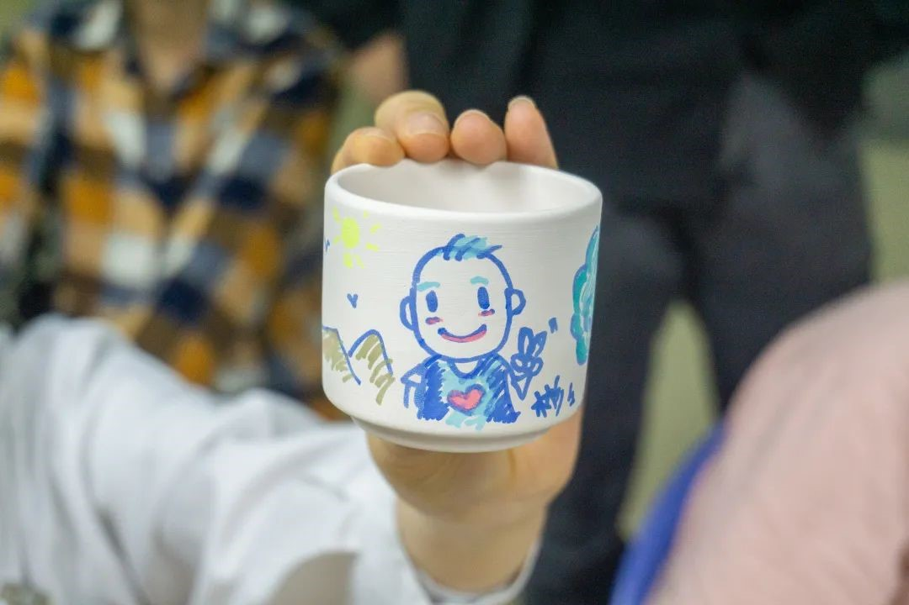
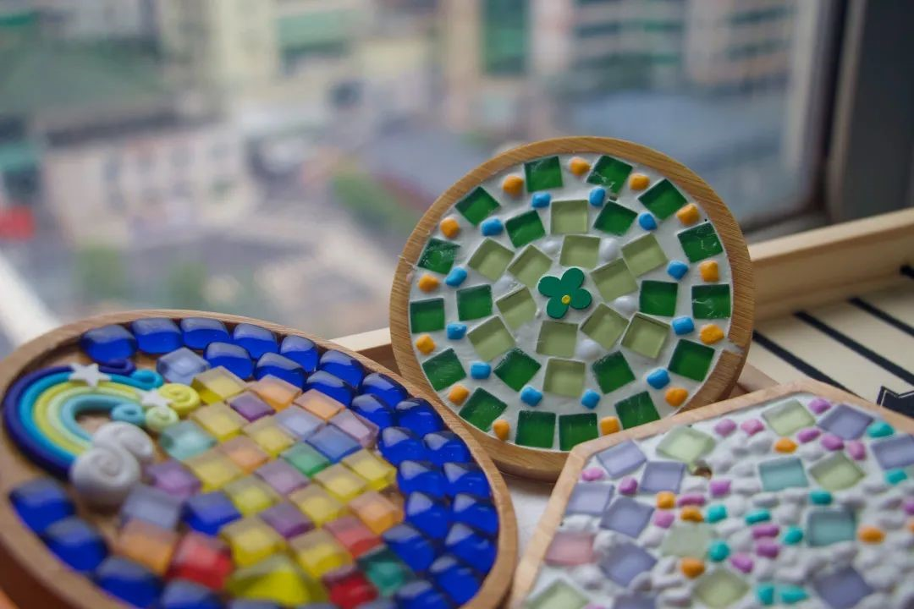
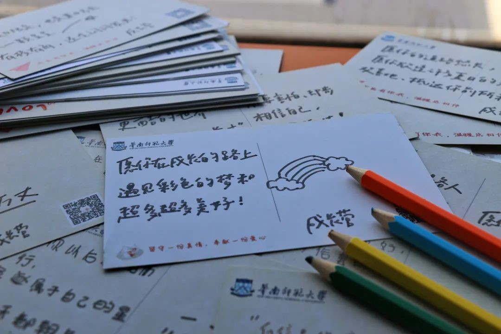

文章来源广州市妇女儿童福利会（ID：GZSEFH），是获得广州市民政局认定的慈善组织，是由广州地区社会各界热心妇女儿童事业的知名人士、妇女工作者、教育工作者、医务工作者等个人及相关单位自愿组成的地方性、联合性、非营利性社会团体。转载请联系广州市妇女儿童福利会。
对外合作
羊城新星“她”成长：医路随学——遥远星系不变的光
发布于 2023/4/10 17:22 作者：昕桐 浏览量：132 点赞：1条
项目简介
党中央和国务院高度重视我国儿童重大疾病的防治工作，其中以儿童癌症为主要代表的疾病受到了特别关注。 对于稚嫩的他们来说，远离了同龄人的欢声笑语，远离了校园生活的欣欣向荣，突如其来的病痛与生活环境的剧变，无异于使他们迫降到一个陌生而黑暗的星球。 而医路随学的团队就像春日的暖阳一样，笼罩在病房这个特殊的环境中，缓解着疾病带给孩子们的痛苦。
“每一朵鲜花，都应该沐浴阳光”

小学员手绘的杯子
“每一朵鲜花，都应该沐浴阳光。”华南师大成长营的负责人罗同学说道，医路随学项目开展的初衷是让每一个学龄的孩子无论是处于多么与众不同的阶段，都能有接受教育和陪伴的机会，用我们的爱和陪伴，给孩子们带来心灵的成长。
为此，华南师大成长营凭借大学生朝气活力和对社会和公益的向往，以及学校的师范和心理学优势，以线上+线下独特的“医路随学”病房学校模式，开展一对一教学、小班制趣味课堂、心理辅导、艺术启蒙等服务活动，充分发挥师范生高校优势。
借助网络化、数字化、智能化信息技术并收集信息时代中的网络教学资源，为住院的孩子提供系统化的教学服务、在陪伴式学习中关爱孩子的身心健康成长，鼓励孩子积极面对生活，减轻重大疾病对长期住院孩子带来的心灵封闭、社会隔阂等问题；同时激发了孩子的学习热情与主动性，帮助治愈的孩子尽快融入校园。
“温暖与陪伴，穿越时空”

小学员趣味手工课堂的作品
当问及罗同学最初参与进该项目时的原因，他说道“因为我自己小学二年级有过一段住院经历，那会电子产品还不是很发达，每天除了治疗就是对着窗户发呆，当时其实并没有很严重，只是住了短短十几天，但是当时那种对陌生环境的恐惧和孤独让我至今对医院都有点抗拒，当时在学校里看见在病房里开设“学校”这个概念的时候，仿佛一下穿越回了小学二年级那个小男孩，我想如果当时有一群温暖亲切的哥哥姐姐来教他上上课，一起谈谈心，那段时光一定会没有那么黑暗了。因为自己淋过雨，所以想为后来的人撑一把伞。我就立刻报名了。”
罗同学的美好愿景在日复一日的陪伴中慢慢都成为了现实：参加手工趣味课堂的小学员把自己亲手做的捕梦网送给妈妈，说“有了这个妈妈晚上就不会做噩梦啦！”、有一些性格内向的小学员从一开始的不愿意讲话，到一步步走出病房，再到每天主动完成作业，期待着下一次课程。医路随学项目的课程设计帮助这些特殊的小朋友更深刻地理解生命的意义，思考如何让生命闪耀出更炫目的光芒。
“爱的陪伴，可以点亮星系”
关于教学的交流，罗同学给我们分享了这样一段经历：我们在中山大学附属肿瘤防治中心遇到过一位小李同学。根据他的情况和要求，我们主要是进行化学、生物教学服务，辅助心理调适，比如日常的情绪疏导。我们的服务一直延续到他痊愈返校，在他返校后，小李同学的母亲在给我们的感谢信中写到： “谢谢病房学校让孩子们内心仍然憧憬着课程” “我们之后也想做志愿者，做点力所能及的事”
小李同学也经常会在我们的交流群中分享他最近的学习生活情况。他现在已经充分适应了学校的生活，有一次在学校体育课时一位同学身体出了状况，不停地流鼻血，小李运用自己在医院的知识帮助他科学快速地止了血，然后带他一起去了医务室。 听到这个消息的时候，华南师大成长营的大家都非常感动与振奋，感觉这个善意在逐渐影响更多的人。我们去帮助小朋友，小朋友去帮助他的同学。这是一个延续的过程。希望在我们的努力下，这个世界可以变得更温暖吧。 采访接近尾声，罗同学的剪影在夕阳的映射下变得光芒四射，就像奥特曼一样，为这些迫降黑暗星球的小朋友带来了光与能量，让他们在短暂的停留后，飞向未来更广袤的宇宙。

华南师大成长营给学员的祝福